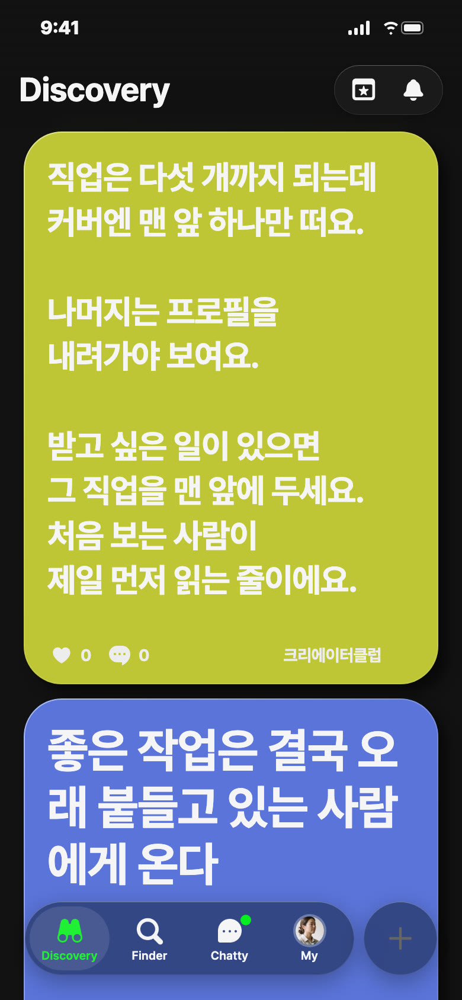
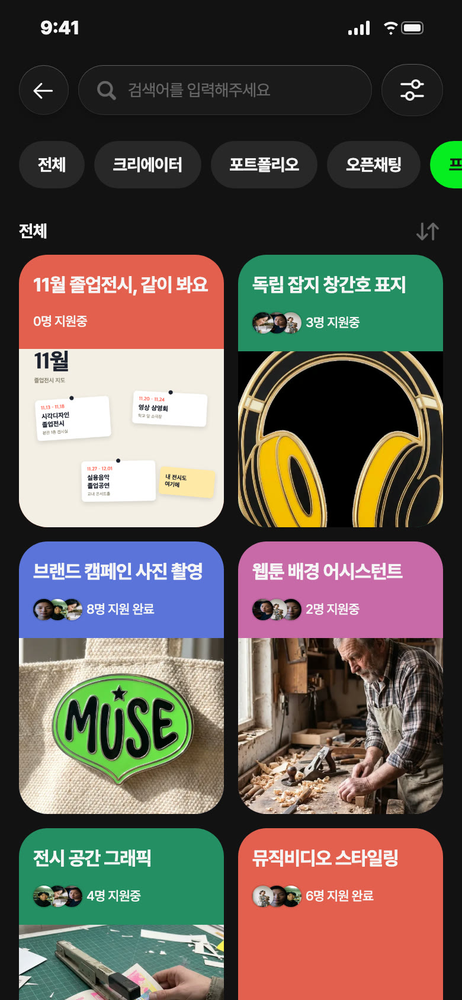
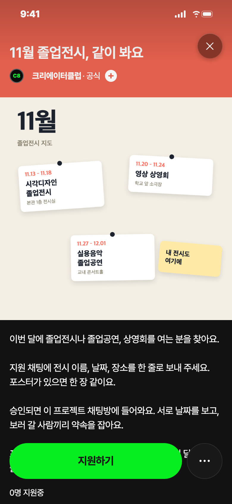
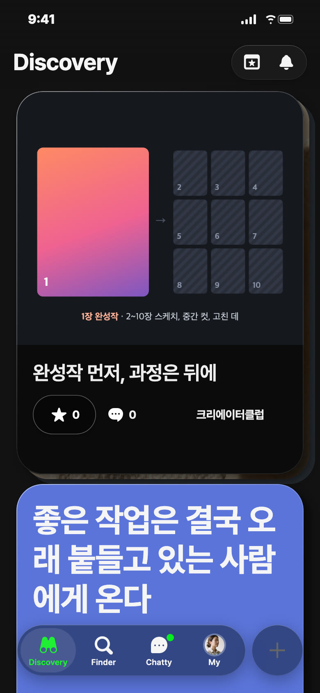
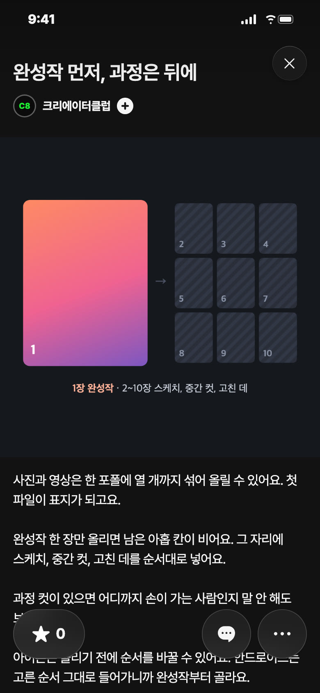

C8 앱 게시 시안 · 11/7(토) — 오늘은 쉬어요 · 세 안 비축(영감은 일 11/8 젠지 추천)
비축 · 일 11/8 추천 · 영감 · 일 11/8 낮 12시 · 노랑

칸: 앱 소개 × 쓸모(이럴 때 이 기능)
근거: 직업 선택 시트 「최대 5개까지 선택되며, 순서대로 프로필에 반영돼요.」 + 커버 스킨 A~E 머리가 모두 professions[0]만 그림, 아래 정보 칸에서 전부 보임(앱·웹 코드 11/7 확인)
왜 일요일: 일요일 1순위 「이럴 때 이 기능」 — 다음 주 노크 받기 전에 바로 고칠 수 있는 한 가지
보낼 사람: 일러스트도 하고 영상도 자르는 친구에게 「너 커버엔 영상만 떠」
받고 싶은 댓글: 부탁 안 함
영감 글
직업은 다섯 개까지 되는데 커버엔 맨 앞 하나만 떠요. 나머지는 프로필을 내려가야 보여요. 받고 싶은 일이 있으면 그 직업을 맨 앞에 두세요. 처음 보는 사람이 제일 먼저 읽는 줄이에요.
비축 · 프로젝트 · 코랄


칸: 잇기 × 판 열기(학교와 행사)
왜 비축: 지원 승인·채팅방 지킬 사람이 C8 계정이라 샐리가 정할 것
보낼 사람: 같이 졸전 준비하는 동기에게 「우리 전시 여기도 올리자」
받고 싶은 지원 채팅: 「○○대 시각디자인 졸업전시, 11/13~18 본관 1층이에요. 포스터 같이 보내요」
제목
11월 졸업전시, 같이 봐요
카테고리
전시 · 공연
모집 내용
이번 달 졸업전시·졸업공연·상영회를 여는 회원 누구나 · 11/8~11/30 · 상품 없음
설명
이번 달에 졸업전시나 졸업공연, 상영회를 여는 분을 찾아요. 지원 채팅에 전시 이름, 날짜, 장소를 한 줄로 보내 주세요. 포스터가 있으면 한 장 같이요. 승인되면 이 프로젝트 채팅방에 들어와요. 서로 날짜를 보고, 보러 갈 사람끼리 약속을 잡아요. 포스터가 하나씩 쌓이면 이 채팅방이 그대로 이번 달 졸업전시 지도가 돼요.
비축 · 포트폴리오


칸: 보여 주기 × 쓸모
근거: 사진·영상 섞어 10개·첫 파일이 표지, 안드로이드는 사진 순서 못 바꿈(제품이해 10/31 4절 확인 8·19)
왜 비축: 화요일 자리는 설명서 연재 몫, 1편 이유 받기 전이라 다른 날 후보
보낼 사람: 완성작 한 장씩만 올리는 동기에게 「너 스케치 더 좋던데 그것도 넣어」
받고 싶은 댓글: 부탁 안 함
제목
완성작 먼저, 과정은 뒤에
설명
사진과 영상은 한 포폴에 열 개까지 섞어 올릴 수 있어요. 첫 파일이 표지가 되고요. 완성작 한 장만 올리면 남은 아홉 칸이 비어요. 그 자리에 스케치, 중간 컷, 고친 데를 순서대로 넣어요. 과정 컷이 있으면 어디까지 손이 가는 사람인지 말 안 해도 보여요. 아이폰은 올리기 전에 순서를 바꿀 수 있어요. 안드로이드는 고른 순서 그대로 들어가니까 완성작부터 골라요. #작업과정